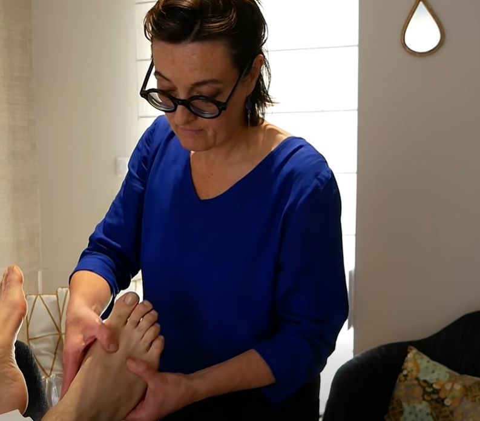

Réalisations
Ici, vous retrouverez mes ouvrages vidéo ainsi que mes réalisations de sites internet. Cliquez sur une carte pour ouvrir directement la réalisation correspondante.
Mes ouvrages
Choisissez une catégorie pour afficher mes réalisations vidéo ou les sites internet réalisés.
Vidéos mises en avant
Une sélection de projets représentatifs de mon travail. Cliquez sur une réalisation pour ouvrir la vidéo correspondante.

Communication • Campagne
Réussir Chasné — 9 valeurs
Une vidéo de communication pensée pour présenter clairement les valeurs portées par l’équipe Réussir Chasné, avec un montage structuré et un message direct.

Présentation • Campagne
Présentation — Réussir Chasné
Une vidéo de présentation réalisée pour exposer le projet, l’équipe et la démarche de Réussir Chasné de manière claire, humaine et accessible.

Vœux • Communication
Réussir Chasné — Les vœux 2026
Une vidéo de vœux conçue pour accompagner la communication de Réussir Chasné, avec un ton institutionnel, chaleureux et adapté au contexte local.

Conte • Vidéo narrative
Faëlendil et le Sortilège
Une réalisation orientée narration et ambiance, conçue pour transporter le spectateur dans un univers fantastique à travers le montage, les images et le rythme du récit.

Entreprise • Présentation
Entreprise bien-être
Une vidéo pensée pour valoriser une activité professionnelle, présenter un univers, transmettre une ambiance et renforcer l’image de marque de façon humaine et professionnelle.

Teaser • Spectacle
Teaser — Le Château d'Effereyn
Un teaser dynamique conçu pour annoncer l’univers du Château d'Effereyn, installer l’ambiance et donner envie au public de découvrir le spectacle.

Extrait • Mise en scène
Dragon du spectacle — Le Château d'Effereyn
Une captation centrée sur l’un des temps forts du spectacle, avec une mise en valeur du dragon, de l’ambiance visuelle et de la puissance scénique.

Final • Captation
Final — Le Château d'Effereyn
Une vidéo qui met en avant le final du spectacle, en travaillant le rythme, l’émotion et l’impact visuel pour conclure sur une séquence marquante.

Teaser • Univers fantastique
Teaser — La Forêt des Légendes
Un teaser pensé pour introduire l’univers mystérieux et immersif de La Forêt des Légendes, avec une approche visuelle destinée à éveiller la curiosité.

Captation • Spectacle
La Forêt des Légendes
Une réalisation mettant en lumière l’ambiance générale du spectacle, les personnages, les décors et le travail de narration à travers l’image.

Générique • Montage
Générique de fin — La Forêt des Légendes
Un générique de fin travaillé comme un prolongement de l’univers du projet, avec un montage soigné permettant de clôturer la réalisation de manière cohérente et immersive.

Événement • Automobile
L'avant départ du 205 Trophy — Équipe Bretonne Féminine
Une vidéo réalisée pour mettre en avant les préparatifs, l’énergie et l’état d’esprit de l’équipe avant le départ du 205 Trophy, avec une approche vivante et authentique.
Sites internet réalisés
Une sélection de sites web conçus pour des clients. Cliquez sur une carte pour visiter directement le site.
Site internet • Client
Unicorns Spirit
Site internet vitrine réalisé pour l’association Unicorns Spirit, avec pour objectif de mettre en valeur son univers artistique et ses prestations. Le site présente les activités proposées, les projets réalisés ainsi que l’identité visuelle du groupe à travers une interface immersive et adaptée à son image.
Site internet • Client
Réussir Chasné
Site internet réalisé dans le cadre des élections municipales 2026 pour une liste sans étiquette, à la demande de l’équipe « Réussir Chasné ». Le projet comprend la conception du site, la mise en ligne des contenus ainsi que la réalisation de trois vidéos destinées à accompagner la communication de la liste.